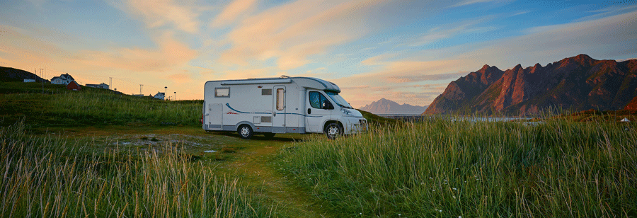
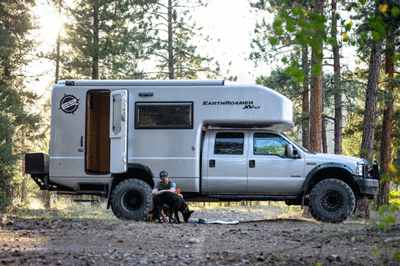
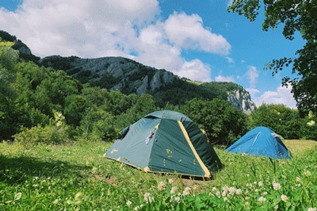

Equipment List
Being prepared when going Boondock camping is a must. Because boondock camping takes you off the grid, you must bring all the things you don’t normally think about when you leave on a trip, one example is toilet paper. If you don’t bring it, you’ll have to do without it and that can be a problem in those messy moments. Before you go on a Boondocking camping trip it is important to think through every item that you use each day and determine if you will need it. Below is a list of the basic items needed when you go Boondock camping, followed by more specific items needed for those who want to go Tent camping or RV camping.


Universal Equipment List
Shelter and Sleeping Needs
- Tent with rain fly
- Sleeping bag
- Pillow
- Fleece sleeping bag liner
- Blankets
- Sleeping mat or cot
- Camp chairs
- Spare batteries & Chargers
- Flashlight, headlamp, or lantern
- Canopy tent
- Tarp & rope
- Gas Firepit & Propane
Food Preparation and Eating
- Stove or Grill
- Fuel, (gas, propane, etc.)
- Matches and lighter
- Ice cooler
- Pots, pans, and tea kettle
- Chopping board
- Plates, bowls, and mugs
- Cooking and eating utensils
- Dish cloths, and dish towels
- Wash basin and dish soap
- Trash bags
- Food
- Portable water jugs (lots!)
Clothing
- Normal everyday clothing, but keep in mind that lightweight and quick drying materials like nylon will help you stay warmer, drier, and more comfortable in the cold. Cotton and denim take a long time to dray after getting wet.
- Rain jacket or poncho
- Clean and dry clothing to sleep in.
- Proper shoes that will keep you warm, dry, and protected.
- Wool hat, gloves, coat, multiple layers for warmth.
- Spare underwear and socks.
- Sun hat, sun block, after sun, and sunglasses.
Toiletries
- Your personal toiletries
- Toothbrush
- Toothpaste
- Medications
- First aid kit
- Hand sanitizer and hand soap
- Toothbrush and toothpaste
- Towels
- Insect repellent
- Toilet Paper